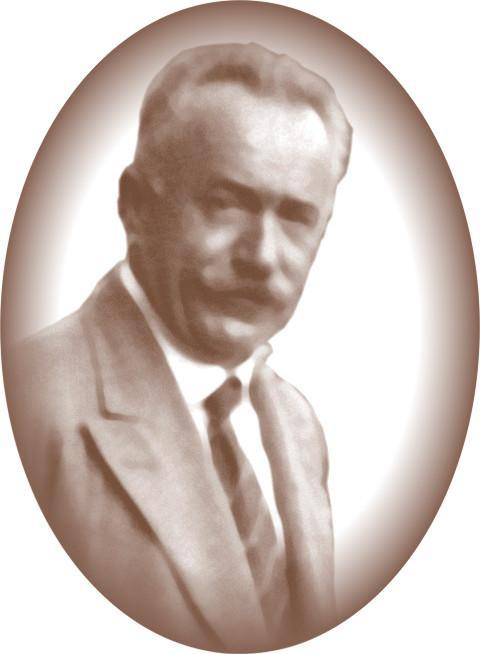
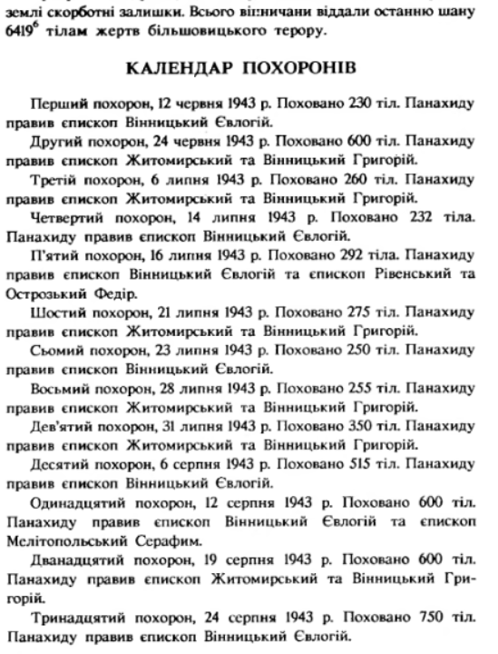
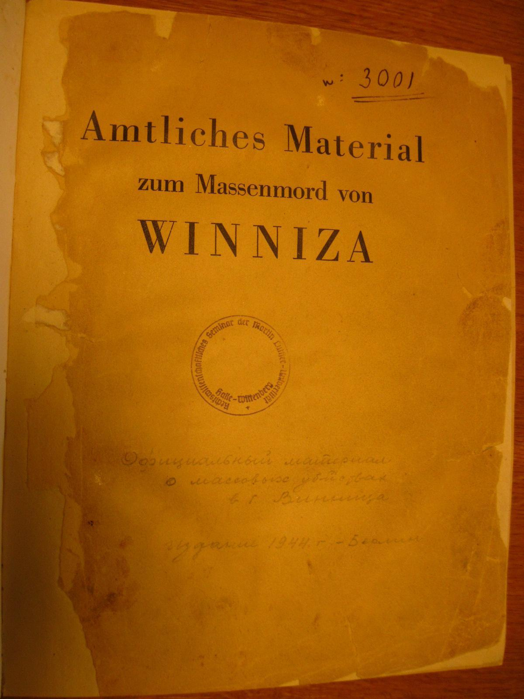
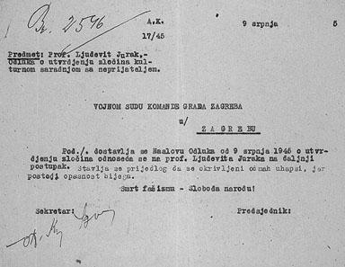
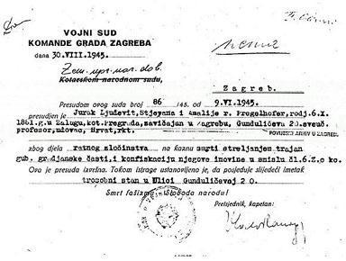
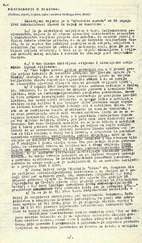

Історична карта 1945 року
Перейти до карти
Юрак Людевіт - етнічний хорват, який був засуджений та страчений військовим судом комуністичного режиму. Він не тільки висвітив правду про Вінницький терор 1937-1938 рр., але й підтвердив страти населення, як фахівець-науковець. Жив у складний політичний період, який охоплював кілька важливих історичних подій та змін у Європі. Народився 6 жовтня 1881 року в селі Залуг, Австро-Угорщина, вбитий 9 червня 1945 року в Загребі, Хорватія. Його народження припало на часи політичного напруження.

Під час Першої світової війни (1914-1918) відбувся розпад Австро-Угорської імперії, що призвело до створення нових держав, включаючи Королівство Югославія, до складу якого увійшла Хорватія. Після Першої світової війни Югославія переживала політичну нестабільність через етнічні конфлікти та боротьбу за автономію різних регіонів. Під час Другої світової війни Югославія була окупована нацистською Німеччиною, а Хорватія стала маріонеткою в руках країн Осі. Саме в цей період Юрак брав участь у розслідуванні масових поховань у Вінниці.
Після закінчення Другої світової війни Югославія стає соціалістичною федеративною республікою під керівництвом Йосипа Броза Тіто, який був прихильником соціалізму. Його можна вважати диктатором, який розпочав пізніше політику тітоїзму. Нова ідеологія виникла у результаті розбіжностей між Тіто і Сталіним щодо методів розбудови комунізму.
Людевіт Юрак вивчав медицину в університеті Інсбрука, який закінчив у 1910 році. Після закінчення університету в 1914 році Юрак приїхав до Загреба, де очолив відділення патології в Лікарні сестер милосердя і обіймав цю посаду до самої смерті. Пізніше він працював з 1922 р. професором судової медицини на медичному факультеті в Загребі.
Маючи відповідну освіту та фах у галузі патологічної анатомії й судової медицини, був запрошений у 1943 році Міжнародним комітетом Червоного Хреста взяти участь у розслідуванні злочинів проти жертв масових репресій, які відбулися у Вінниці. Окрім Людевіта, було запрошено ще десять експертів, які досліджували масові поховання у Вінниці з 12 по 15 липня 1943 року.
Юрак у ході ексгумації та розтину тіл, виявлених у масових похованнях, документував рани та інші фізичні докази, що свідчили про те, що ці люди були розстріляні під час сталінських репресій 1937-1938 років. Звіти справи стали важливими доказами злочинів сталінського режиму. Його докладні описи були використані для інформування міжнародної спільноти про масштаби репресій.
Робота комісії не лише допомогла викрити сталінські злочини, але й зіграла важливу роль у збереженні пам'яті про жертв репресій. Комісія науково встановила причину смерті, а саме постріл у потилицю та час (1937-1938 р.) За час роботи комісії серед виявлених трупів вдалося ідентифікувати близько 679 осіб. Всього на Вінниччині в період терору знищено від 13 до 16 тисяч, репресовано – більше 20 тисяч.

Людевіт Юрак написав свої висновки у статті «Масові могили у Вінниці» та опублікував її у загребській газеті Незалежна Держава Хорватія 25 липня 1943 року. У ній він описав стан жертв. Були знайдені сліди жорстокого ставлення та навіть катувань жертв перед смертю. Переважно це були люди різної статі та віку. Серед постраждалих були і літні чоловіки (деякі дуже похилого віку), так і жінки молодшого віку. Репресій зазнали не тільки українців, але представників інших національностей - поляків, євреїв, росіян, чехів, румунів тощо.

Під час слідчих дій на місцях масових поховань збиралися сотні людей. Вони були різного віку та статі, переважно жінки, які шукали своїх зниклих безвісти рідних. Вони оглядали предмети одягу, які були викопані з могил та розвішані на мотузці у міському парку. Це розслідування допомогло відкрити страшну правду людям, що їхні родичі не в засланні, як ті думали, а давно є вбитими та поховані зовсім поруч.
Після Другої світової війни Юрак був заарештований 15 травня 1945 року новою комуністичною владою. В обмін на свободу йому пропонували відмовитися від свого підпису під звітом Міжнародної комісії та заявити, що він його ставив під тиском, але Юрак відмовився. Його було засуджено 9 червня 1945 року «за військові злочини», до страти через розстріл, безповоротної втрати громадянської честі та конфіскації майна. За словами комуністичних слідчих, він був винним у тому, що приписав масову бійню у Вінниці «дружній Радянській Росії» та «свідомо і зловмисно проводив пропаганду проти дружньої Радянської Росії». Вирок був здійснений 1945 році у перехідний період – коли нацистські війська вигнали, але соціалістична Югославія ще не встигла постати. Тому був відчутний сильний вплив радянських спецслужб, а на частині території були радянські війська.
Рішення про визначення злочину культурної співпраці з ворогом.

ДО ЗАГРЕБСЬКОГО ВІЙСЬКОВОГО СУДУ
В ЗАГРЕБІ
Доставляємо Вам Рішення від 9 липня 1945 р. Про визначення злочину щодо проф. Людевіта Юрака для подальшого провадження. Пропонуємо негайно затримати обвинуваченого через можливість втечі.
Смерть фашизму - свобода народу!
Секретар: Президент [підпис нерозбірливо]

Загребський військовий суд
Дата: 30.8.1945.
Земельній дирекції націоналізованого майна, Загреб
Вироком цього суду № 86/45 від 9.6.1945р.
Юрак Людевіт, професор університету, хорват, римо-католик, син Стіпана та Амалії (її дівоче прізвище Прогельгофер), народився 6.10.1861. у Залузі, з постійною адресою в Загребі, вулиця Гундулічева, 20, визнано винним у військових злочинах і засуджено до смертної кари через розстріл, безповоротної втрати громадянської честі та конфіскації майна.
Цей вирок не підлягає оскарженню. У ході слідства встановлено, що обвинувачений володіє наступним майном – трикімнатною квартирою на вулиці Гундулічева, 20.
Смерть фашизму – свобода людям!
Голова суду капітан: [підпис нерозбірливо] "
КІНЕЦЬ ДОКУМЕНТУ "Jurak Presuda"
Архівний підпис для цієї сторінки: HR-HDA, ZKRZ,GUZ, 2611, Vojni sud Zagreb, № 86/1945
АНАЛІЗ ЗЛОЧИНУ:

(злочинець, місце і дата вчинення злочину, засоби злочину, потерпілі):
Обвинувачений опублікував викривальну статтю в "Хорватському народі" 25.7.1943 р., в якій ми бачимо, що:
1. Обвинувачений брав участь у так званому Міжнародному комітеті, якому Міністерство закордонних справ Німеччини та Міністерство охорони здоров’я доручили приписати більшовицькій владі масову бійню Вінниці, використовуючи свої нібито наукові знання; і підкреслюючи, що жертвами були цивільні особи – переважно селяни та робітники (на відміну від жертв Катинського лісу, які були польськими офіцерами), щоб злісно і навмисно поширювати страх і ненависть до Радянської Росії серед наших селян і робітників.
За рішенням Сенату Загребського університету його було реабілітовано в 1991 році. Юрак Людевіт був людиною високої фахової майстерності та моральної мужності, яка присвятила своє життя дослідженням в області медицини. Його робота допомогла виявити правду про сталінські репресії та зберегти пам'ять про жертв. Незважаючи на переслідування та трагічну долю, Юрак залишив важливу спадщину в історії судової медицини та правозахисної діяльності.
Сьогодні, на жаль, нам важливий досвіт діяльності як Людевіта Юрака, так і Міжнародної комісії у дослідженні злочинів росії проти України. Зокрема для розслідування та документальної фіксації масових поховань, які вже знайшли та невідомо ще скільки знайдуть на нашій території. Ці докази можуть стати ключовими у притягненні винних до відповідальності на міжнародному суді та допоможуть відкрити правду для світу.
Автор: Гуцол Аліна
Цікаві місця

Всі права захищені.